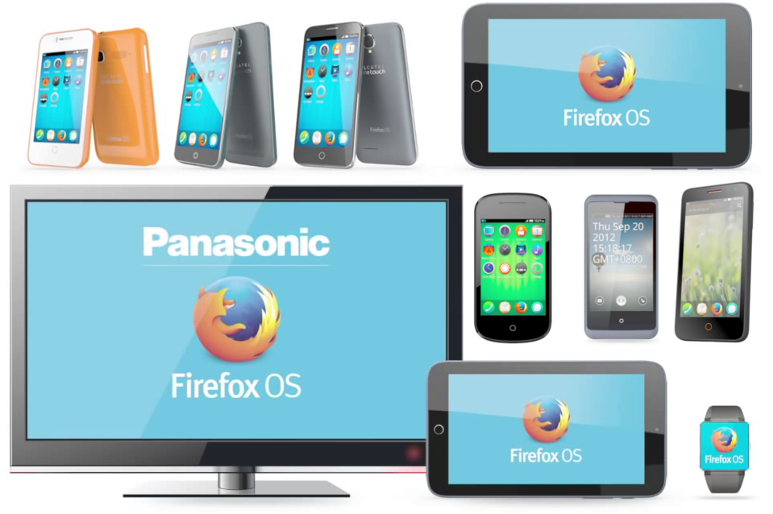
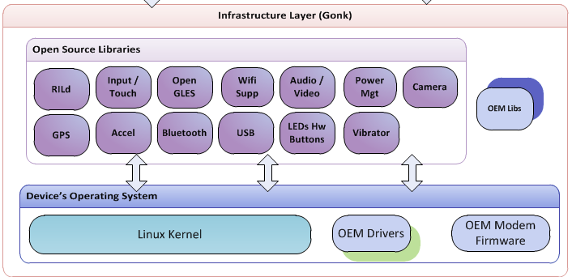
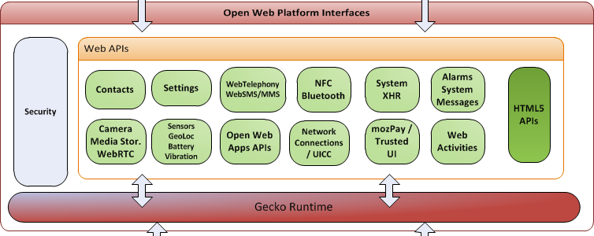
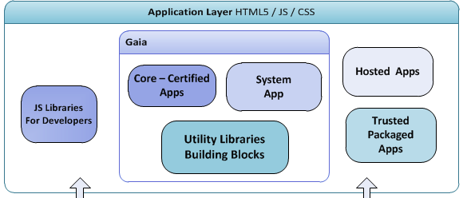
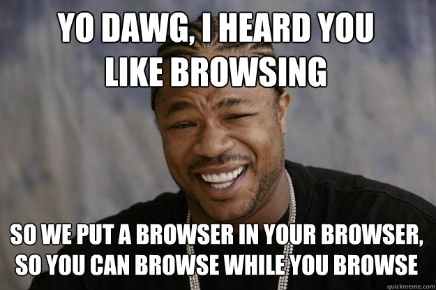

Firefox OS
Bootcamp
Who are these guys?
Dietrich Ayala
Fernando Jiménez
Bootcamp overview
What is Firefox OS?
Firefox OS is a new open source mobile operating system.
Fully based on web technologies.
Closes a gap in the mobile market
Provides an alternative, open platform
Released in 14 countries
Spain, Poland, Venezuela, Colombia, Peru, Uruguay, Mexico, Brazil...
And with 7 mobile operators and 3 hardware partners
Beyond smartphones
Did we mentioned that it is open source?

All the code is on GitHub
Architecture

Firefox OS == Gonk + Gecko + Gaia
Gonk
Is an Android fork without a Dalvik machine. A fly-weight Linux distribution.
Gecko
Is the Firefox' engine on steroids (lots of new APIs).
Gaia
Is a set of Web Applications covering the core functionality: dialer, messaging, contacts, camera, gallery, homescreen, keyboard, system...
You can find more details about Firefox OS Architecture at the Mozilla Developer Network
Applications
Firefox OS applications == web applications + ...
Web applications?

You already know this stuff!
+ manifest
The file where you say your web site is indeed a
web application.
+ access to hardware through special APIs
APIs allowing access to the hardware such as the
(mobile) radio, sensors, geolocalitation, device storage...
+ some of them requiring special permissions.
To guarantee that the user has total control
about what she is doing.
+ a collaborating schema based on web activities.
To allow inter-app communications.
+ answering to device events attending system messages.
Avoiding background services running and consuming resources. Attend on demand!
All these features are being standardized in order to reach...
Firefox OS applications === web applications

The manifest
It's only a JSON file with three mandatory fields:
{
"name": "Awesome App",
"description": "This application rocks!",
"launch_path": "/index.html"
}Call it manifest.webapp and add it to the root of your site.
You'll need a 128px size icon to upload the app to the market:
{
"icons": {
"16": "/img/icon-16.png",
"48": "/img/icon-48.png",
"128": "/img/icon-128.png"
}
}You can provide developer information:
{
"developer": {
"name": "The Gaia team",
"url": "http://gaiamobile.org"
},
"version": "1.0.1"
}And translations:
{
"locales": {
"es": {
"description": "¡Esta aplicación es la caña!",
"developer": {
"url": "http://gaiamobile.org/"
}
}
}But the real interesting fields are:
permissions, web activities & system messages
Explore all the options in the
Mozilla Development Network page for manifest!
WebAPIs
You can find more information and the whole list of APIs at the WebAPI wiki and MDN pages
App Security
Types of applications
Remember: the Web is the platform
By level of trust
Regular Web Content
Complete access to HTML5 and safe APIs
Can request explicit access to some APIs: Geolocation, gUM, Fullscreen, Notifications, etc.
Permissions not remembered by default
Installed Web Apps
Can request implicit access to some APIs: Alarms, FMRadio, etc.
Direct fullscreen access
Higher storage quotas
Privileged
Equivalent in security and functionality to native apps on other platforms
Content Security Policy (CSP): no inline
Reviewed and signed by trusted app store
Direct access to a lot of high risk APIs: Browser, Mobile Network, SystemXHR, TCPSockets, Contacts (explicit), etc.
Certified
Intended for system-critical apps (i.e. Gaia)
More extrict CSP
Never prompt for access (implicit) (except Geolocation and gUM)
Direct access to critical risk APIs: WebSMS, WebTelephony, WebBluetooth, MobileConnection, PowerManagement, etc.
By delivery mechanism
Hosted apps
Internet origin
Local manifest
Security level: web
Packaged apps
ZIP file format
Only local resources
Remote resources via XHR
Security levels: several
Permissions
Asking for permission is easy.
Just add this to the manifest:
{
"permissions": {
"contacts": {
"description": "Import contacts to AwesomeApp",
"access": "read"
}
}
}And there are a ton of permissions:
{
"permissions": {
"alarms": {},
"browser":{},
"power":{},
"fmradio":{},
"webapps-manage":{},
"mobileconnection":{},
"bluetooth":{},
"telephony":{},
"voicemail":{},
"device-storage:sdcard":{ "access": "readonly" },
"device-storage:pictures":{ "access": "readwrite" },
"device-storage:videos":{ "access": "readwrite" },
"device-storage:music":{ "access": "readcreate" },
"device-storage:apps":{ "access": "readonly" },
"settings":{ "access": "readwrite" },
"storage":{},
"camera":{},
"geolocation":{},
"wifi-manage":{},
"desktop-notification":{},
"idle":{},
"network-events":{},
"embed-apps":{},
"background-sensors":{},
"permissions":{},
"audio-channel-notification":{},
"audio-channel-content":{},
"cellbroadcast":{},
"keyboard":{}
}
}You must also remember to provide the type
when using privileged APIs:
{
"type": "privileged"
}And respect the CSP policy: no inline scripts nor CSS!
Protecting apps from other apps
All applications are sandboxed and running in user space.
Per app separation of cookies, localStorage, appCache, indexedDB
<iframe mozapp>
Apps run inside mozApps iframes
Only the System app may embed these type of iframes
One app can't directly launch or frame another
<iframe mozbrowser>
In child, window.top == window (!window.parent)
In parent, allowed limited cross-domain access (current location, same child events)
Protecting the OS from apps
Apps can only talk to OS via IPC (IPDL)
Content processes run as low-rights
App process permissions are limited to itself (process permissions == manifest permissions)
You can read more about Firefox OS security at the Mozilla Developer Network